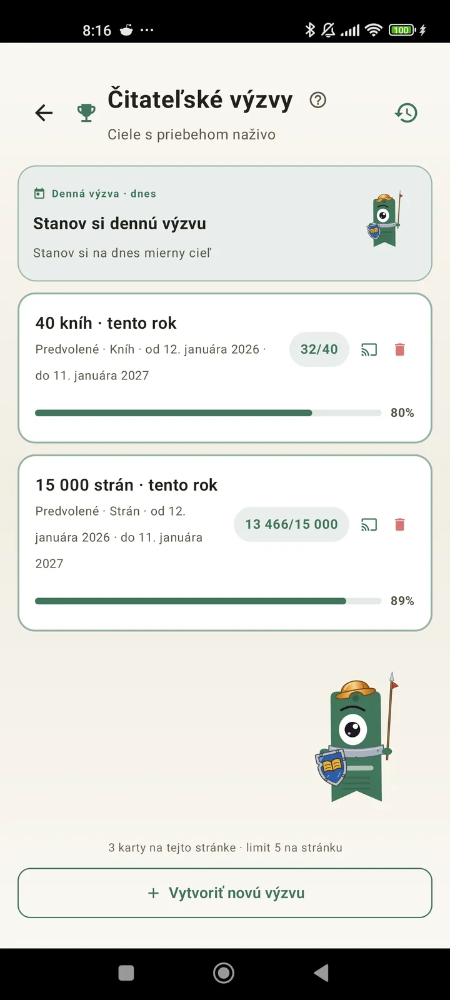

Spoznaj sa ako čitateľ
Výzvy, bingá, widgety a ďalšie funkcie, vďaka ktorým z čítania vyťažíš viac. Novinka vo verzii 3.7: výzvy a widgety bingo.

Čitateľské výzvy
Nastav si ciele podľa strán, sérií alebo žánrov. Až 15 aktívnych výziev zadarmo, s Pro neobmedzene. K tomu prispôsobiteľná denná výzva, ktorá sa do limitu nepočíta.

Denná výzva
Nový cieľ každý deň. Splň výzvu do polnoci a udrž si sériu.

Čitateľské bingo
Každý mesiac dve nové bingá s tematickými políčkami. Dokonči riadky, stĺpce alebo celú kartu.

Týždenný súhrn
Každý pondelok prehľad tvojho týždňa: prečítané strany, celkový čas, séria a porovnanie s predchádzajúcim týždňom.

Mesačné zhrnutie
Keď sa mesiac skončí, Lecturameter ho zhrnie: strany, čas, dočítané knihy, tvoje tempo deň po dni a kniha mesiaca.

Widget bingo Pro
Bingo karta tohto mesiaca, vždy na očiach, s dokončenými políčkami a vytvorenými radmi.

Widget knihy Zadarmo
Maj knihu, ktorú práve čítaš, priamo na domovskej obrazovke: obálku, názov, autora, strany a percento postupu, vždy aktuálne. Veľkosť si môžeš upraviť podľa seba.
Seriously bro the app feels like therapy, I have gone from reading a couple of pages per day to like 20 pages per day and improvingSpätná väzba od používateľa, poslaná e-mailom

Mesačné porovnanie Pro
Rýchly pohľad na posledné mesiace bez otvárania aplikácie. Stĺpce so stranami za každý mesiac a zvýraznený aktuálny, takže na prvý pohľad vidíš, či sa ti tento mesiac darí lepšie alebo horšie ako minulý.

Widget výziev Pro
Tvoje aktívne výzvy a ich priebeh na domovskej obrazovke. Ktoré sa zobrazia, vyberieš na obrazovke Výzvy.